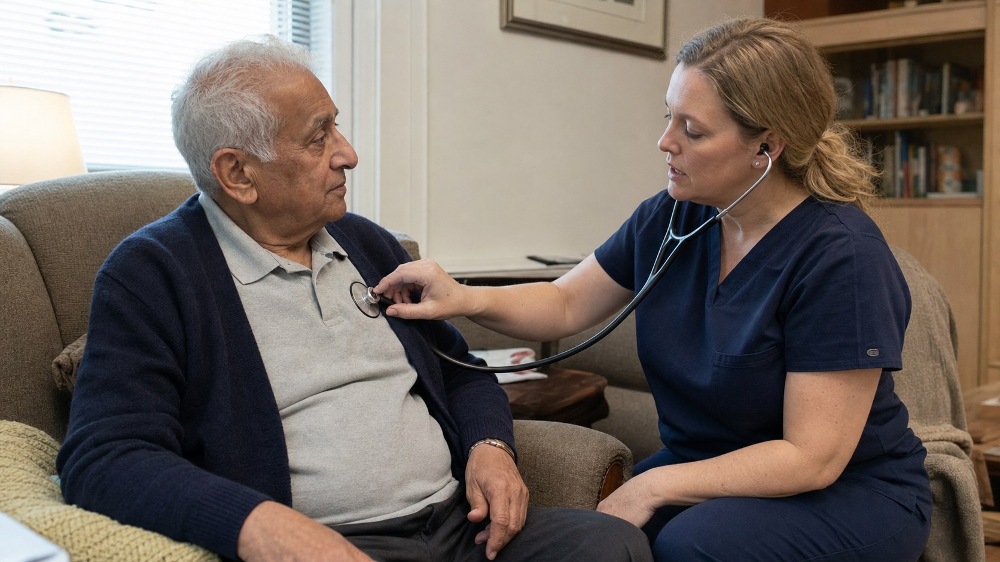

Start with the person you love
We begin with what your loved one wants to keep doing, where support is needed and what matters most at home.
Nurse-led home care across the Lower Mainland
Ethical Care at Home brings personal support, nursing care and rehabilitation coordination into one clear care approach, so your loved one can live safely and meaningfully at home, and your family knows what comes next.
Need care for yourself or someone you love? Call to book a free in-home assessment. For an emergency, call 911.
When care needs change
You may be noticing small changes, facing an urgent transition or simply feeling unsure about what comes next. Whatever is happening, we can help you understand the care options.
How we care
Tell us what is happening at home, and we can help you understand which kind of support may fit.
Reliable everyday support that protects routines, dignity and independence at home.
See Home SupportFamiliar routines, consistent support and clearer guidance for the person you love and the family around them.
See Dementia CareTime-sensitive planning for discharge, the first days home and recovery support.
See recovery supportNursing assessment, care planning and clinical support delivered in the home.
See Nursing CareDependable relief for family caregivers, clearly explained overnight arrangements and comfort-focused support at home.
See respite and overnight careCoordinated access to in-home rehabilitation and professional support.
See rehabilitation support
Care should feel clear from the beginning
Home care can involve caregivers, nurses and other health professionals. We explain each person’s role, how the pieces fit together and who your family can turn to when something changes.
Learn about CARE StandardsWe begin with what your loved one wants to keep doing, where support is needed and what matters most at home.
Everyday support, nursing care and rehabilitation require different skills. Your family should know who is providing each part of care.
Clear updates and next steps help everyone understand what is happening and when the care approach may need another look.
A clearer way to begin
Tell us what is happening at home and what your family needs help with. You do not need to know which service to ask for.
We’ll explain the kinds of care that may fit and answer your questions in plain language.
You’ll know who may be involved, how each person can help and what the next practical step could be.
If the situation changes, talk with us again. We can help you understand whether the care approach needs another look.
Google reviews
Read recent experiences shared by families who have received support from Ethical Care.
“Every caregiver we’ve met has been compassionate, reliable, and attentive to our family’s needs.”
“They make each day brighter and easier. Their compassion and dedication give our family complete peace of mind.”
“The Ethical Care Team was so helpful when my husband needed help. I would recommend them to anyone.”
Lower Mainland service areas
Explore care in your community, or contact the team to confirm current availability for your location and needs.
Explore Service AreasIn-home service area
Map: Hitoubashira, CC BY-SA 4.0Practical guidance, at your pace
Plain-language guides help families understand options, prepare for decisions and move forward with more confidence.
A practical checklist covering assessment, qualifications, responsibilities, communication, schedule changes and costs.
Read it. Print it. Use it anywhere. Care options guideUnderstand how private care may supplement public services.
Read the guide Hospital discharge guidePrepare for the first days home, equipment and recovery support.
Read the guideClear answers
If your question is not here, start with a conversation. You do not need to know the right care term before you call.
Talk to a NurseWe know that when a hospital discharge is approaching or care at home is becoming difficult, waiting can feel stressful. How soon care can begin depends on the support needed, where the person lives, the schedule and who needs to be part of the care team. Tell us what is happening and when help is needed, and the team can confirm current availability.
A registered nurse helps make sense of your loved one’s health and day-to-day needs, so the right questions are asked and each person’s role in care is clear. It does not mean a nurse provides every visit. Depending on the support needed, caregivers, nurses and rehabilitation professionals may each have a different role. Your family should understand who is doing what and why.
Needs can change, and it is important to talk about those changes early. A new symptom, a difficult routine, a safety concern or a change in what the family can manage may mean the care approach needs another look. The provider should explain what can change, who needs to be involved and what the next step may be. For a sudden or severe health change, contact the appropriate clinician or emergency service.
It depends on what your loved one needs during the night. Awake overnight care is for situations where someone needs to remain awake and available, while some overnight arrangements include agreed rest periods. Twenty-four-hour home care is different and generally involves rotating care providers and planned handoffs so support is available around the clock. The provider should explain the exact coverage before your family decides.
A practical first step
If you are planning ahead or arranging care for the next few days, share what your family needs. We can help you understand which options may fit.